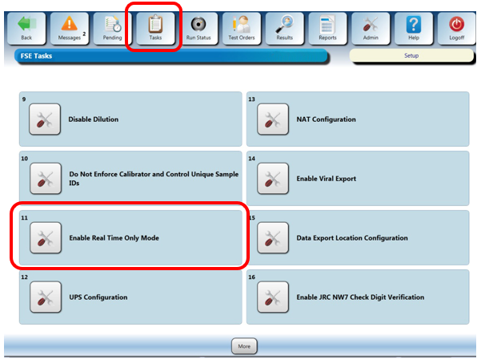
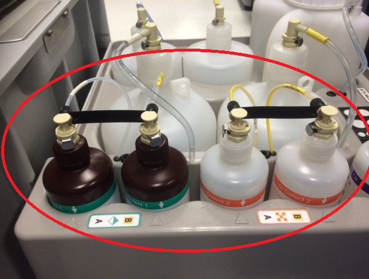
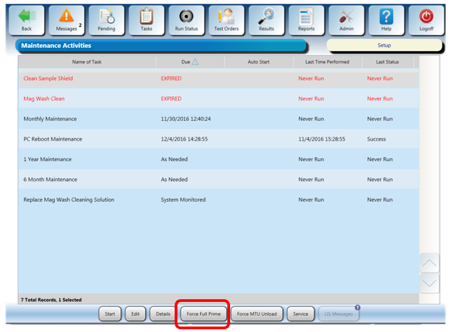

Auto Detect Line Purge Procedure
What is Affected
This procedure purges the Auto Detect lines to prepare a Panther to use Real Time Only Mode. Purging of the fluid lines is required to prevent crystallization that may lead to clogging of the fluid lines, pumps, injectors and valves that can cause degraded performance of the Auto Detect injection system.
Parts and Materials Required
- Proper PPE
- Lab quality Distilled Water (Di-H2O)
- MTUs (for priming)
- Panther Tool Kit
Time Required
- 1 Hour
Procedure
- Put on proper PPE.
- Power on the Panther System and PC.
- Start the Panther Main GUI and wait for the system to initialize.
 Check that the system does not have Real Time Only Mode enabled:
Check that the system does not have Real Time Only Mode enabled:

- Open the Universal Fluid Drawer.
- Remove the Auto Detect 1 and Auto Detect 2 bottles (Kit A and Kit B).
- Empty and completely drain all the bottles (follow proper lab procedures).

- Thoroughly rinse the Auto Detect 1 and Auto Detect 2 bottles, lids, and straws with Di-H2O.
- Fill the Auto Detect 1 and Auto Detect 2 bottles with Di-H2O.
- Place the Auto Detect 1 and Auto Detect 2 bottles back in the Universal Fluid Drawer and re-connect the bottles to the fluidic lines.
- Verify all RFID indicator lights are green.
- Click on the Tasks button.
- Select Perform Maintenance.
- Click on Force Full Prime Operation of pumping fluid through tubing to ensure proper and consistent fluid delivery (remove air from the tubing, etc.). (this will clean out the lines with Di-H2O water).

- Remove and empty all the Auto Detect 1 and Auto Detect 2 bottles once the Full Prime is complete.
- Place the empty Auto Detect 1 and Auto Detect 2 bottles back in the Universal Fluid Drawer and connect the bottles to the fluidic lines.
- On the Tasks screen, select Perform Maintenance.
- Click on Force Full Prime again (this second prime will fail but is necessary to push the air through the lines).
- Enable Real Time Mode Only mode.
- The setting will change to "Disable Real Time Only Mode".
- Select OK at the "Operator Input Required" prompt.
- Shutdown the Panther Main GUI.
- Start the Panther Main GUI.
- Click on Tasks.
- Click on Perform Maintenance.
- Click on Force Full Prime.
- The system should now prime in Real Time Only Mode without the Auto Detect lines working.
Verification
- Verify that the system successfully primes in Step 27.
 button at the top of the page to send feedback, comments, or change requests.
button at the top of the page to send feedback, comments, or change requests.